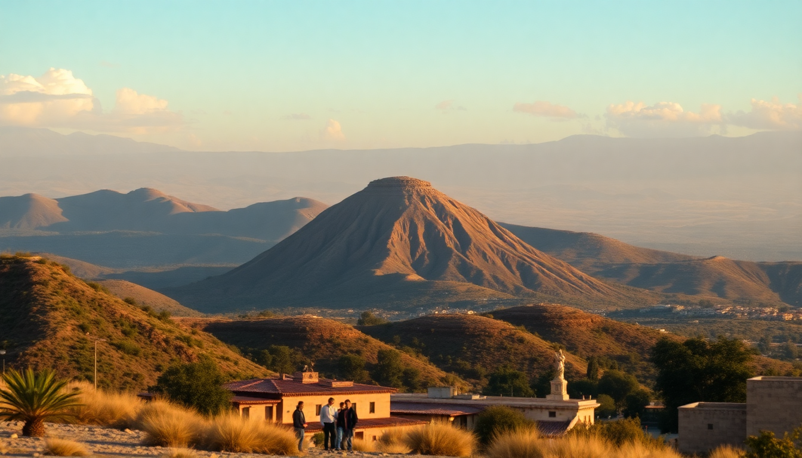

Best Day Trips from Oaxaca: Monte Albán, Hierve el Agua & Mitla

I spent a week based in Oaxaca City, and every morning I’d walk out of my hotel near the Zócalo with a coffee and a plan. The three big day trips — Monte Albán, Hierve el Agua, and Mitla — each eat up a half-day to a full day. Here’s exactly how I did them, what I’d skip, and what I’d do again.
How do you get to Monte Albán from Oaxaca City?
Monte Albán is the closest major ruin to Oaxaca — about 20 minutes by car — but the drive up a winding mountain road makes it feel farther. I took a colectivo from the Hotel Rivera del Ángel on Mina Street. They leave every 20–30 minutes starting at 8:00 AM, cost 70 pesos round-trip, and drop you right at the entrance. The return trip is the same: just walk back to the parking lot and hop on the next van.
- Colectivo from Hotel Rivera del Ángel — cheapest option, runs until 3:00 PM (last return around 4:00 PM)
- Taxi from the Zócalo — about 300–400 pesos one-way; good if you want to stay for sunset
- Guided tour — many include transport from your hotel, but you lose flexibility
I arrived at 9:30 AM and the site was already warm, but not packed. By noon, tour groups flooded the main plaza. Go early. The ruins themselves are impressive — the Plataforma Sur gives you a 360-degree view of the Oaxaca Valley. I spent two hours walking the main structures and another hour at the small on-site museum. Bring water; there’s no shade on the central platform.
Is Hierve el Agua worth the drive?
Honestly, yes — but only if you go early and don’t expect pristine natural pools. Hierve el Agua is a set of mineral-travertine rock formations that look like frozen waterfalls, with two man-made swimming pools fed by spring water. The drive from Oaxaca City takes about 1.5 hours, the last 30 minutes on a winding dirt road. I hired a private driver through my hotel for 1,200 pesos round-trip (split between four of us). There are also colectivos from the Central de Abastos market, but they take longer and leave infrequently.
- Private driver — 1,000–1,200 pesos for up to 4 people; best for flexibility
- Colectivo from Central de Abastos — around 150 pesos per person; leaves when full
- Entry fee — 50 pesos for the site, plus 20 pesos for parking if you drive
The main pool is cold but refreshing, and the view over the valley is stunning. The crowds arrive around 11:00 AM. I was in the water by 9:30 AM and had the place mostly to myself. The second pool, El Anfiteatro, is quieter and slightly warmer. Skip the food at the entrance stands — it’s overpriced and mediocre. Bring your own snacks and eat back in Oaxaca.
What’s the difference between Mitla and the other ruins?
Mitla is the most intact Zapotec site in the valley, but it’s a different experience from Monte Albán. While Monte Albán is about scale and mountain views, Mitla is about detail — intricate stone mosaics covering entire walls. The site is smaller, and you can see everything in 45 minutes to an hour. I paired Mitla with a stop at Tule Tree (the massive ancient cypress in Santa María del Tule) and a mezcal distillery in Santiago Matatlán.
- **Colectivo from the Periférico bus station** — 50 pesos, drops you at the Mitla town square
- Entry fee — 80 pesos for the archaeological site
- Tule Tree — 20 pesos entry; worth a 15-minute stop
- Mezcal distillery in Santiago Matatlán — free tastings; expect to be sold bottles
The town of Mitla itself is touristy — vendors line the path to the entrance. I found the Group of the Columns and the North Patio the most impressive. The stone fretwork (called grecas) is precise and geometric. If you’re short on time, pick this over Hierve el Agua if you care more about history than swimming. Pick Hierve el Agua if you want a photo and a dip.
Can you combine Monte Albán, Hierve el Agua, and Mitla in one day?
I tried. Don’t. I squeezed Monte Albán in the morning, then rushed to Mitla by noon, and arrived at Hierve el Agua at 2:30 PM — exhausted, sunburned, and fighting crowds. The roads between them are slow, and each site deserves at least two hours. A better plan: do Monte Albán one morning, then on a separate day combine Mitla with Tule Tree and a mezcal stop. Save Hierve el Agua for a third day, or swap it for a hike in the Sierra Norte if you’re not into swimming.
- Day 1 morning — Monte Albán (leave by 8:00 AM, back by 1:00 PM)
- Day 2 full day — Mitla + Tule Tree + mezcal distillery (leave by 9:00 AM, back by 4:00 PM)
- Day 3 morning — Hierve el Agua (leave by 7:30 AM, back by 1:00 PM)
If you only have two days, skip Hierve el Agua. Monte Albán and Mitla give you more history for your time.
What should you eat near these sites?
Lunch near Monte Albán is limited to a few overpriced restaurants at the entrance. I ate at Los Pacos in Oaxaca City afterward — their tlayudas are excellent. Near Mitla, the Restaurante La Zapoteca in town serves solid mole and a good chile relleno. At Hierve el Agua, I already warned you: skip the food stands. Instead, stop at Casa Oaxaca in Oaxaca City for a proper dinner when you return.
- Los Pacos (Oaxaca City) — tlayudas and memelas; cheap and fast
- Restaurante La Zapoteca (Mitla) — mole negro and fresh tortillas
- Casa Oaxaca (Oaxaca City) — upscale but worth it for mole amarillo
- Mercado 20 de Noviembre (Oaxaca City) — grab a tlayuda for the road
FAQ
How much time do I need at Monte Albán? Plan for 2.5 to 3 hours. That gives you time to walk the main plaza, climb the South Platform, and visit the museum. If you’re a photography person, add 30 minutes for the light around 10:00 AM.
Is Hierve el Agua safe to swim in? The water is spring-fed and tested regularly. The pools are shallow — about 3 to 4 feet deep. The rocks around the edge are slippery. Water shoes help. I wore $20 sandals and regretted it.
Do I need a guide for Mitla? Not really. The signs in English and Spanish are clear. If you want context, hire a guide at the entrance for about 200 pesos. They’ll explain the greca patterns and the relationship between Mitla and Monte Albán.
Conclusion
- Monte Albán is the best single day trip from Oaxaca — go early, take the colectivo, and bring water.
- Hierve el Agua is a 3-hour round-trip drive for a 30-minute swim; go only if you have a third day and a private driver.
- Mitla pairs well with Tule Tree and a mezcal distillery for a full day of variety.
- Don’t try to combine all three in one day. You’ll be miserable.
- Eat in Oaxaca City before or after — the food near the sites is not worth your pesos.